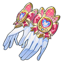
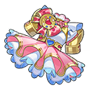

추천 광추
눈부신 파키의 세상
치피 +48% · 환락 인원당 SP 상한 +1
효과 자세히
SP 상한은 최대 +3. SP 소모로 환락도 상승.
오늘의 행운
치확 +20%
효과 자세히
환락 스킬 발동당 환락도 +20%, 최대 2스택.
슈룸 모험기
환락도 +20%
효과 자세히
환락 스킬 후 적 받는 환락 피해 +10% 2턴.
추천 유물
빛나는 공훈의 마법 소녀 4 · 텐고쿠@라이브스트리밍 2
- 머리
 주옵션HP부옵션전투 공격력 3,600까지 · 치명타 확률 · 치명타 피해
주옵션HP부옵션전투 공격력 3,600까지 · 치명타 확률 · 치명타 피해 - 손

주옵션공격력부옵션전투 공격력 3,600까지 · 치명타 확률 · 치명타 피해 - 몸통

주옵션치명타 확률부옵션전투 공격력 3,600까지 · 치명타 피해 - 다리
 주옵션공격력%부옵션전투 공격력 3,600까지 · 치명타 확률 · 치명타 피해
주옵션공격력%부옵션전투 공격력 3,600까지 · 치명타 확률 · 치명타 피해 - 구체
 주옵션공격력%부옵션전투 공격력 3,600까지 · 치명타 확률 · 치명타 피해
주옵션공격력%부옵션전투 공격력 3,600까지 · 치명타 확률 · 치명타 피해 - 매듭
 주옵션공격력% / 에너지 회복효율부옵션전투 공격력 3,600까지 · 치명타 확률 · 치명타 피해
주옵션공격력% / 에너지 회복효율부옵션전투 공격력 3,600까지 · 치명타 확률 · 치명타 피해
이 조합을 추천하는 이유
웃음 획득에 비례한 환락 방어력 무시. 한 턴 SP 3pt 소모 시 장신구 치피 +32% 추가.
빛나는 공훈의 마법 소녀 4 · 텐고쿠@라이브스트리밍 2
- 머리
주옵션HP부옵션속도 · 공격력% · 치명타 확률 · 치명타 피해
- 손 주옵션공격력부옵션속도 · 공격력% · 치명타 확률 · 치명타 피해
- 몸통 주옵션치명타 확률부옵션속도 · 공격력% · 치명타 피해
- 다리
주옵션속도부옵션공격력% · 치명타 확률 · 치명타 피해
- 구체
주옵션공격력%부옵션속도 · 치명타 확률 · 치명타 피해
- 매듭
주옵션공격력%부옵션속도 · 치명타 확률 · 치명타 피해
이 조합을 추천하는 이유
효광 200에 맞춰 자신의 속도를 134로 세팅합니다.
빛나는 공훈의 마법 소녀 4 · 텐고쿠@라이브스트리밍 2
- 머리
주옵션HP부옵션속도 · 공격력% · 치명타 확률 · 치명타 피해
- 손 주옵션공격력부옵션속도 · 공격력% · 치명타 확률 · 치명타 피해
- 몸통 주옵션치명타 확률부옵션속도 · 공격력% · 치명타 피해
- 다리
주옵션속도부옵션공격력% · 치명타 확률 · 치명타 피해
- 구체
주옵션공격력%부옵션속도 · 치명타 확률 · 치명타 피해
- 매듭
주옵션공격력% / 에너지 회복효율부옵션속도 · 공격력% (주옵션 제외) · 치명타 확률 · 치명타 피해
이 조합을 추천하는 이유
마법소녀와 텐고쿠에서 별도 종결 컷을 목표로 합니다.
천명에 응해 먼 길을 떠난 점술가 4 · 신의 순간의 환락 2
- 머리
 주옵션HP부옵션속도 · 치명타 확률
주옵션HP부옵션속도 · 치명타 확률 - 손
 주옵션공격력부옵션속도 · 치명타 확률
주옵션공격력부옵션속도 · 치명타 확률 - 몸통
 주옵션치명타 확률부옵션속도
주옵션치명타 확률부옵션속도 - 다리
 주옵션속도부옵션치명타 확률
주옵션속도부옵션치명타 확률 - 구체
 주옵션HP% / 방어력%부옵션속도 · 치명타 확률
주옵션HP% / 방어력%부옵션속도 · 치명타 확률 - 매듭
 주옵션에너지 회복효율부옵션속도 · 치명타 확률
주옵션에너지 회복효율부옵션속도 · 치명타 확률
이 조합을 추천하는 이유
은랑 LV.999·스파키·아하·펄이 모두 2돌인 편성입니다.
이 정도면 잘 키웠다
선택한 세팅 기준 · —는 확인된 수치 없음
마법소녀·텐고쿠에서 공격력 신발로 환락도 전환을 맞춥니다.
| 스탯 | 추천 스탯 | 준종결 | 종결 |
|---|---|---|---|
| 공격력 | 전투 3600[1]공격력 기반 버프를 포함한 환락도 전환 목표. | — | — |
| 치명타 확률 | 100%[2]효광 전용 광추 치확 +10% 참고. | — | — |
| 치명타 피해 | 180% | — | — |
세팅 기준·출처
속도 생략 구성의 별도 종결은 확인되지 않았습니다. 별도 준종결 목표는 확인되지 않았습니다.
효광 200에 맞춰 자신의 속도를 134로 세팅합니다.
| 스탯 | 추천 스탯 | 준종결 | 종결 |
|---|---|---|---|
| 속도[1]효광 속도 200 기준. | 134 | — | 134 |
| 공격력 | 3500+ | — | 3600 |
| 치명타 확률 | 90%+ | — | 100% |
| 치명타 피해 | 120% | — | 150%+ |
스탯 조건과 각주
- 속도 효광 속도 200 기준. ↑
마법소녀와 텐고쿠에서 별도 종결 컷을 목표로 합니다.
| 스탯 | 추천 스탯 | 준종결 | 종결 |
|---|---|---|---|
| 속도 | — | — | 148 |
| 공격력 | — | — | 3000 |
| 치명타 확률 | — | — | 100% |
| 치명타 피해 | — | — | 200% |
세팅 기준·출처
시트의 별도 종결 수치입니다. 공격력 측정 시점과 편성은 미기재입니다. 별도 준종결 목표는 확인되지 않았습니다. 종결 표는 기본적으로 명함·전용 광추 기준입니다.
은랑 LV.999·스파키·아하·펄이 모두 2돌인 편성입니다.
| 스탯 | 추천 스탯 | 준종결 | 종결 |
|---|---|---|---|
| 속도 | 160+ | — | — |
| 치명타 확률 | 82% | — | — |
성혼과 추천 돌파
보너스 턴과 SP 상쇄가 목적이면 2돌. 아하 승격 효과는 별도로 적용.
1아하 타임 후 웃음 +5pt
웃음 1pt당 팀 저항 관통 +1.5%p, 최대 15%.
2아하 타임 후 보너스 턴·킬링 2개추천
킬링 1개 소모당 치피 +10%, 2턴·최대 4스택.
3스킬 +2 · 일반 공격·환락 스킬 +1
해당 스킬과 대응 강화 스킬의 레벨을 올린다.
4필살기 웃음 +5pt · 환락도 +36%
3턴.
5필살기·특성 +2 · 환락 스킬 +1
해당 스킬과 대응 강화 스킬의 레벨을 올린다.
6저항 관통 +20%
환락 스킬에 집계된 웃음 1pt당 타격 +1회, 최대 40회.
추천 파티


기본 운영과 행적
기본 운영
스킬로 방송 연결, 필요한 만큼 상호작용 함정 사용. 킬링 포인트부터 사용해 SP를 아끼고 강화 평타로 전환.
행적 육성 순서
환락 스킬·특성 우선. 승급 4단계 환락 캐릭터 수에 따른 필살기 자원과 6단계 치피를 해금.
아하 속도 계산기 →